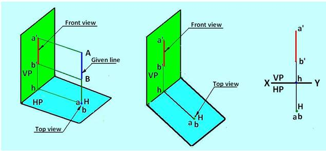
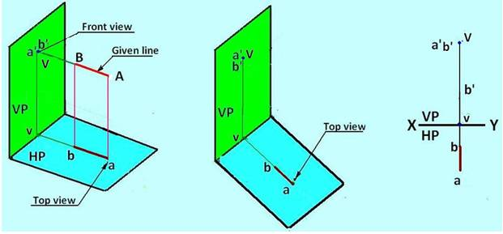
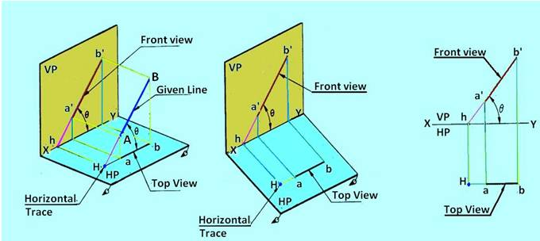
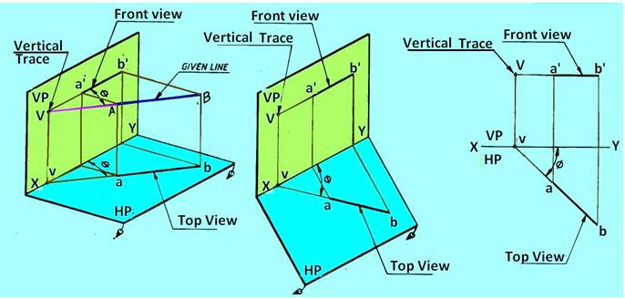
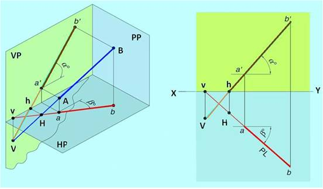

Traces of a line
· The trace of a line is defined as a point at which the given line, if produced, meets or intersects a plane.
· When a line meets HP, (or if necessary on the extended portion-of HP), the point at which the line meets or intersects the horizontal plane, is called horizontal trace (HT)of the line and denoted by the letter H.
· When a line meets VP (or if necessary on the extended portion of VP), the point at which the line meets or intersects the vertical plane, is called vertical trace (VT) of the line and denoted by the letter V.
· When the line is parallel to both HP and VP, there will be no traces on the said planes. Therefore the traces of lines are determined in the following positions of the lines.
Trace of a line perpendicular to one plane and parallel to the other
Since the line is perpendicular to one plane and parallel to the other, the
trace of the line is obtained only on the plane to which it is
perpendicular, and no trace of the line is obtained on the other plane to
which it is parallel. Figures 2 and 3 illustrates the trace of a line
parallel tp0VP and perpendicular to HP and parallel to HP and perpendicular
to VP respectively.

Figure 2. Trace of line parallel to VP and perpendicular to HP

Figure 3. Trace of a line perpendicular to the VP and parallel to HP
Traces of a line inclined to one
plane and parallel to the other
When the line is inclined to one plane and parallel to the other, the trace
of the line is obtained only on the plane to which it is inclined, and no
trace is obtained on the plane to which it is parallel. Figure 4 shows the
horizontal trace of line AB which is in lined HP and parallel to VP

Figure 4 Horizontal trace of line AB
Figure 5 shows the vertical trace of line AB which is inclined to VP and parallel to HP

Figure 5 Vertical trace of line AB
Traces of a line inclined to both the
planes
Figure 6 shows the Vertical trace (V) and Horizontal Trace (H) of Line AB
inclined at q to HP and Φ to VP. The line when extended intersects HP at H,
the horizontal trace, but will never intersect the portion of VP above XY
line, i.e. within the portion of the VP in the 1st quadrant. Therefore VP is
extended below HP such that when the line AB is produced it will intersect
in the extended portion of VP at V, the vertical trace.
In this case both horizontal trace (H) and Vertical Trace (V) of the line AB
lie below XY line.

Figure 6 Vertical trace and horizontal trace of line AB which is inclined to both vertical plane and horizontal plane.